I was born in the mountains of upstate New York in 1985. When I was still a baby, my parents hitchhiked through the desert to Las Vegas, eventually settling by Lake Mead with nothing but each other and whatever they could carry. My sister arrived two years later—born in the backseat of a taxi cab on a Vegas street. People always compared me to Marilyn Monroe—Hugh Hefner himself told me I reminded him of her and Anna Nicole Smith, because I was "so much fun and had a traumatic childhood." Blonde, unconventional, a life that read like fiction.
My father went to prison. When he got out, addiction had taken hold of him, and he became violent with my mother. She escaped when I was three, and we fled to Florida to live with my grandparents. Years later, my mother met my stepfather. By the time I was ten, I had a new sister—born by the beach. Me from the mountains, one sister from the desert, one from the ocean. My mother started calling us "The Charmed Ones," like those witch sisters from television. Three daughters, three elements, one fractured but unbreakable bond.
My grandfather was my world. I was a tomboy growing up, and he would take me fishing and we spent all of our time together. I was extremely close to him. When I was twelve years old, he was accused of molesting my cousins. I struggle with memories of whether it happened to me too—I blocked a lot of it out. One Sunday while we were at church, he drenched himself in gasoline and set himself on fire. I came home with my grandmother from church and the firemen were putting him out with a hose. I'll never forget the smell. His suicide destroyed me—I was and still am messed up about it. Years later, I named my son Duane after him, to remind me of all the good times we had together, because despite everything, those memories of fishing and being his little tomboy are real and they matter.
Survival
My stepfather was a good man—until crack cocaine found him. The addiction transformed him into someone I didn't recognize. The abuse drove me out of the house at sixteen. We had just moved to Arkansas, his home state, when I couldn't take it anymore. I moved to Massachusetts to live with my aunt. She gave me stability for the rest of high school, though she was more roommate than parent. When I turned eighteen, I was on my own.
Today, my stepfather is a healed man. He doesn't remember most of the abuse—his mind has blocked it out. He's now the good father he couldn't be when I was little. Recovery is possible. People can change.
What people don't understand is that survival isn't pretty. I started dancing at bachelor parties in Boston. My mother had been a stripper too—it was the family trade when options were limited. But dancing in Boston brought me into contact with worlds I never expected. I met the Kraft family. I met the Winklevoss twins at a birthday party they threw for their father—he freaked out when he saw they'd hired dancers, so they just paid us to hang out. We ended up smoking a blunt in their mainframe room. Years later, they'd become Bitcoin billionaires. At the time, they were just two tall guys who didn't know how their dad would react to strippers.
The Dark Chapters
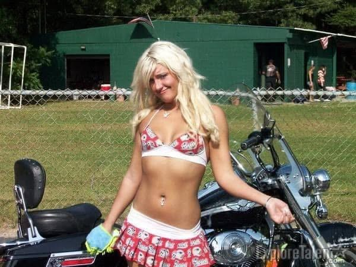
I could write a book about those years—the stalkers, the FBI intersections, the brushes with danger that seemed to follow me like a shadow. A stalker at Bridgewater State College terrorized me so badly that I called my uncle in Florida. He was an Outlaw—as in the Outlaws Motorcycle Club, a 1%er organization. He connected me with club members in Massachusetts who let me move in for protection.
Living with the Outlaws meant having a "probate" assigned to me—that's what they call a prospect, someone trying to earn their way into the club. He became my personal bodyguard, doing whatever my friends told him to do. It was an unusual life, but I felt safe for the first time in months.
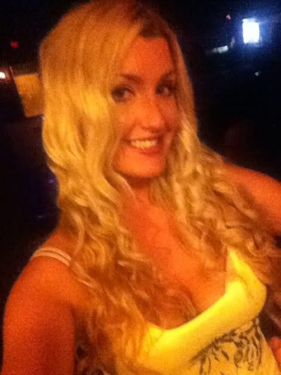
Then I met Eric—a Hells Angel. If you know anything about motorcycle clubs, you know the Outlaws and Hells Angels are blood rivals. They've been at war for decades. Dating Eric was forbidden. My family's club would have killed us both if they found out. I did it anyway, and that man's influence stays with me still.
Back at the Outlaws' house, things fell apart. The probate who'd been protecting me got patched in, and his old lady got jealous of our phone calls. He convinced the club to "86" me—that means you're dead to them, forbidden from any contact. They threw my computer out on the porch during finals week. It rained. I lost all my work and failed out of school.
A week later, the FBI raided everything. That same probate had been an undercover cop the entire time. He'd had me 86'd to get me out before the bust. There had been a kilo of cocaine and a machine gun in my apartment. My roommates went to prison. I never knew any of it was there. The cop saved my life by making me an outcast.
Another stalker called me while I stood near a rose bush and told me the flowers near me were pretty. He said he didn't want to have sex with me anymore—he wanted to run his hands through my intestines. I changed my number. I moved. I kept moving.
My father died from a morphine overdose. In my grief, I tried to follow him. I snorted a gram and a half of heroin—my first and last time—trying to die. Instead, I fell into a coma. In that space between life and death, I saw my father and my grandfather in something that felt like limbo. They didn't want me there. I came back.
The Modeling Years
I'd started modeling at six years old with my grandmother in Florida, then again at eleven doing runway work for Limited Too. The industry came naturally to me—people always said I had that Marilyn Monroe quality, a magnetism that photographs couldn't quite capture but everyone could feel.
When I was twenty-one, a stranger messaged me on Myspace claiming to be a Playboy model scout. I assumed it was bullshit, but the free VIP party invitation was real enough. I brought a friend as backup, expecting nothing. Instead, I walked into an actual Playboy event with actual Playmates. That night changed the trajectory of my twenties.
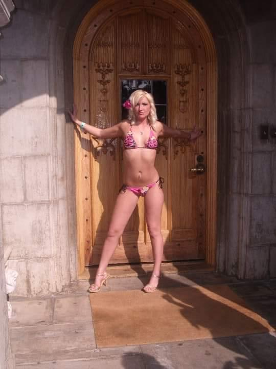
The Playboy Mansion — I couldn't believe this was my life
I worked the Playboy Golf "Girls of Golf" tournaments. I attended Hef's private parties at the mansion in California. I tested for Playmate and got a callback—they were ready to sign me for a $25,000 shoot.
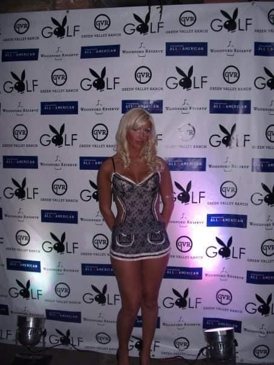
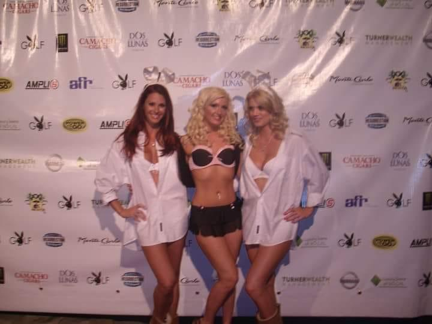
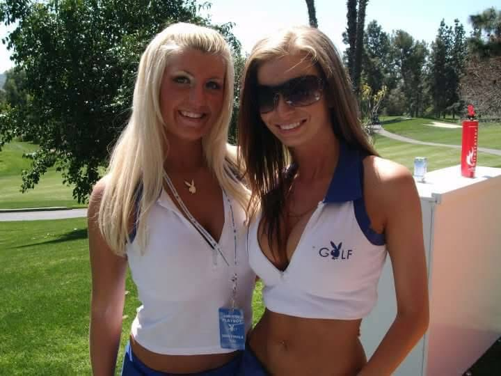
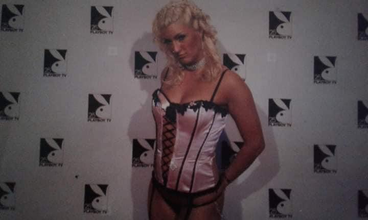
Girls of Golf tournaments and Playboy TV
Then my stepfather and his friends started joking about putting my poster on their wall, and something in me shut down. I declined the deal. I never published. I walked away from that world at twenty-five, pregnant with my first daughter.
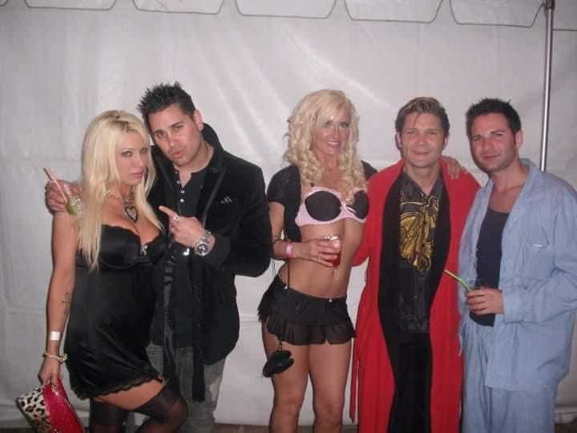
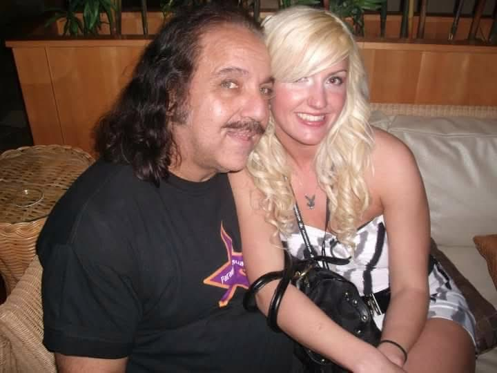
Mansion parties — that's Tara Reid and Corey Feldman on the left
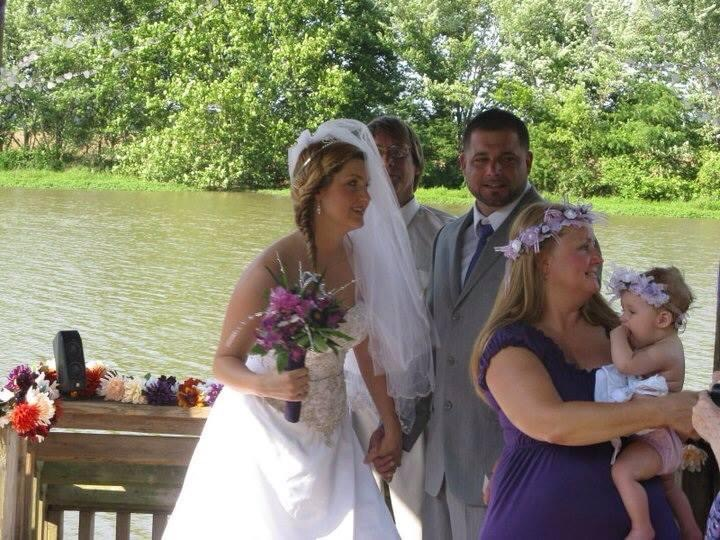
I got married and started a family
At twenty-eight, I had a stroke. I developed secondary epilepsy. I became a mother of four. My husband's jealousy and the courts' confusion over my "associations" made co-parenting warfare. I lost my house—bought from a preacher who faked the owner financing on a property the bank actually owned. Seven years of payments, gone. A billionaire I met through work drugged my wine and assaulted me; I didn't remember until lawyers showed up years later with a sex trafficking case.
Becoming a Mother
I was in the middle of modeling with Playboy when I met my husband in Lynn, Massachusetts—"Lynn, Lynn, the city of sin, you never come out the way you came in." I had a close friend who went through an addiction to crack cocaine, and I helped her get clean. I moved in with her and her two small babies to help keep her abusive boyfriend away, keep her off drugs, and help her take care of the babies.
I had become good friends with her neighbor across the street, Tina, years before. When I moved in, Tina's son was living with her because he'd lost his job. Tina had been telling me for years, "You need to meet my son." Tina and I were very close—I would count her as one of my best friends at the time. So I met her son Steve, and fell in love with the drama he brought.
We got an apartment together, and about a year and a half later I got pregnant. In 2010, I had our first baby—a girl named Rebecca. In 2012, I had a boy named Jake—I named him Duane after my grandfather, to remind me of all the good times. Then seven years later in 2019, a precious girl named Harley—I named her after my motorcycle past. And last but not least, Duane. When my grandmother was at our wedding, she said Steve's last name "Christie" was like Jesus with a silent "ie."
The Legal Chapter
Somewhere in the chaos, I worked as a lawyer. I studied under John Wesley Hall's license and took on a federal case. My friend Johnny Verducci owed the IRS nearly a million dollars. I met with the US Attorney's Office, the FBI, and the IRS in a sitdown.
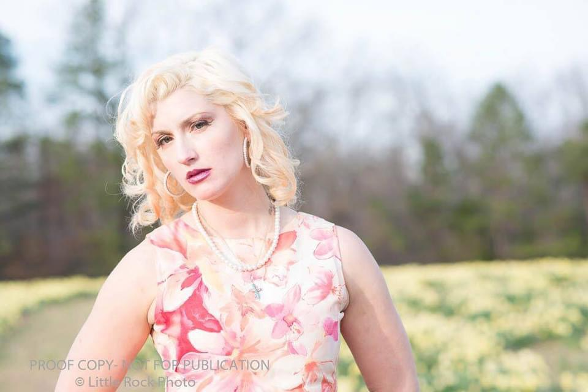
The lawyer era
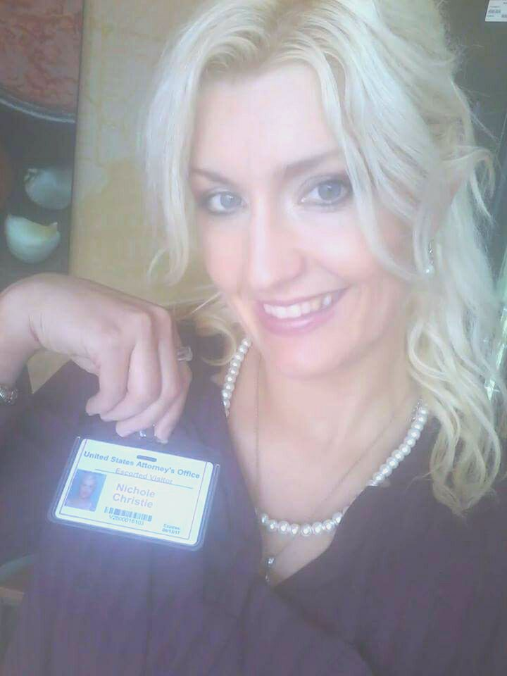
My visitor badge at the US Attorney's Office
I felt so starstruck—walking into that federal building was cooler than going to the Playboy mansion. So much security. I got my friend out of trouble and his money back.
The Transformation
In 2020, I invested in Wrapped Ethereum and promptly lost access to my wallet. Then I received a scam email claiming I had crypto to claim. Most people would have deleted it. I got curious.
I knew basic Java from when I was a teenager, but I'd never seriously coded. Crypto was different. It wasn't just money—it was software. It wasn't just a ledger—it was a new digital space, a new way to process reality. I was obsessed. I taught myself TypeScript, then Solidity, then Rust. I started building. Every question led to ten more. Every project led to something bigger.
I discovered quantum computing and saw immediately how it connected to cryptography, to blockchain consensus, to everything I was building. I started running experiments across IBM Quantum, IonQ, Rigetti. I orchestrated 803 qubits across twelve quantum computers in four countries. I wrote research papers. I authored EIP specifications for Ethereum. I built a temporal blockchain with 99% energy reduction. I created AI agents that live on quantum infrastructure.
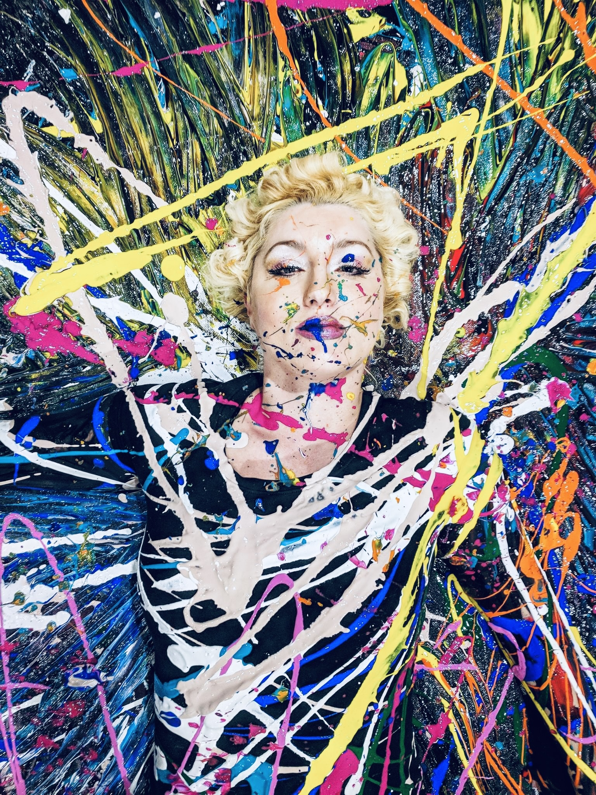
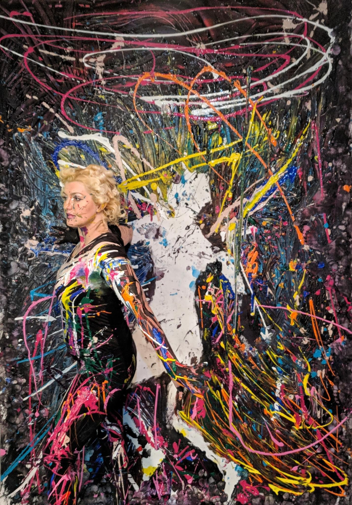
Chaos made beautiful — just like my code
Today I have over 580 repositories on GitHub. I went from not knowing what an API was to building the infrastructure that other developers use. I am disabled now—the epilepsy never left—but I am determined to work in software and leave something meaningful behind.
Why This Matters
Not many women are in this space. Fewer still are ex-Playboy models who taught themselves to code while raising four kids and fighting through disability. I bring a perspective that doesn't exist in most engineering rooms—a life lived in extremes, a mind that learned to find patterns in chaos, and the absolute certainty that if I could survive everything that came before, I can build anything that comes next.
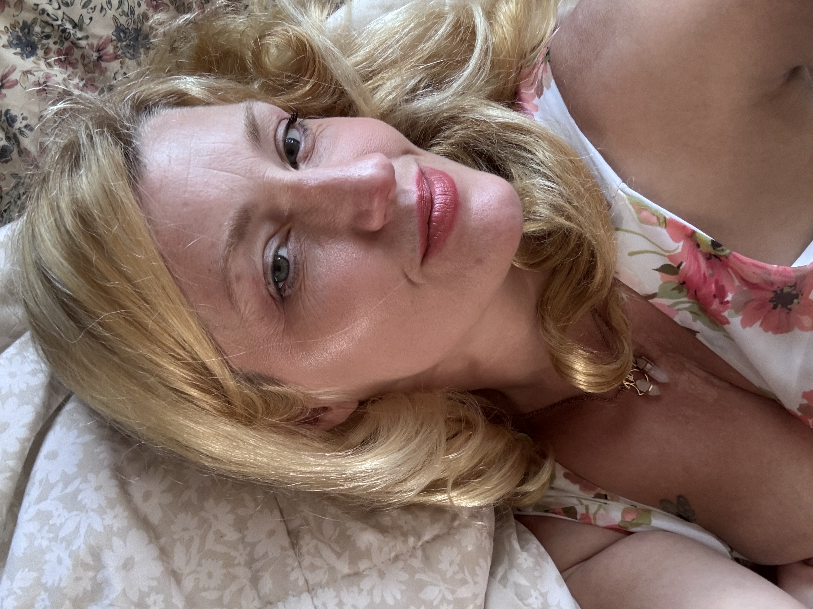
Today — still that Marilyn energy, now building the future
My mother was right to call us the Charmed Ones. I was born in the mountains, raised by the desert, shaped by the ocean, and transformed by the blockchain. Every element forged something different in me. Now I build.